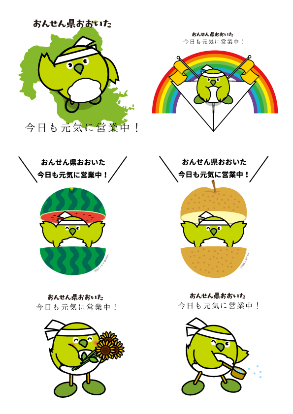

「おんせん県おおいた 今日も元気に営業中！」大分県応援団”鳥”めじろんイラストについて - 大分県ホームページ
本文の保存版（2026-11-22）
出典URL：https://www.pref.oita.jp/site/mejironold/ouen-illust.html
印刷ページの表示
ページ番号：0001068447
更新日：2017年8月10日更新
Post
めじろんの復興応援イラストができました！
九州北部豪雨災害に対する県内外の皆様からの応援、激励に感謝し、「元気なおおいた」を広く発信するため、大分県応援団”鳥”めじろんイラスト「おんせん県おおいた 今日も元気に営業中！」バージョン（６種類）を新たに作成しました。
各種パンフレットやチラシへの掲載、グッズのデザイン等さまざまな用途に、ぜひご活用ください。
なお、申請手続や使用条件については、他のイラストと同様です。詳細は、「デザイン使用申請」「着ぐるみ借受申請」のページを確認ください。

このページに関するお問い合わせ先
広報広聴課
〒870-8501 大分県大分市大手町3丁目1番1号（大分県庁舎本館3階）
Fax：097-506-1726 お問い合わせはこちらから
〒870-8501 大分県大分市大手町3丁目1番1号（大分県庁舎本館3階）
Fax：097-506-1726 お問い合わせはこちらから
Post
地図で使用する画像
- めじろんの画像
https://www.pref.oita.jp/uploaded/image/1016469.jpg - めじろんの画像（予備）
https://www.yurugp.jp/rails/active_storage/blobs/proxy/eyJfcmFpbHMiOnsiZGF0YSI6NjIwODMsInB1ciI6ImJsb2JfaWQifX0%3D--26efb5ad965fd9b797a1462084e364b6624c366e/2026%E3%82%86%E3%82%8B%E3%83%90%E3%83%BC%E3%82%B9%E3%82%81%E3%81%98%E3%82%8D%E3%82%93.png